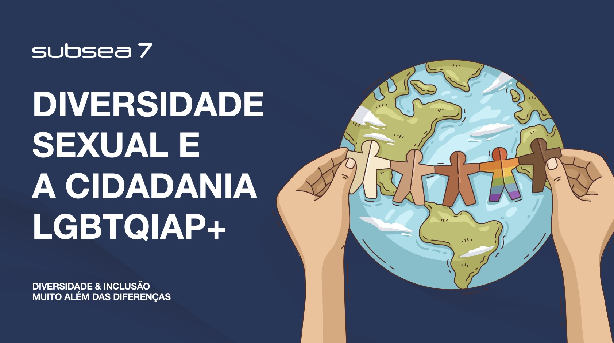
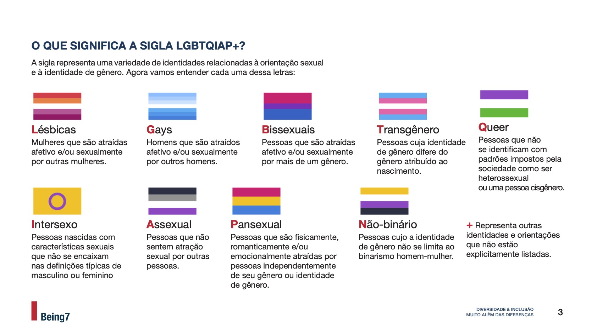
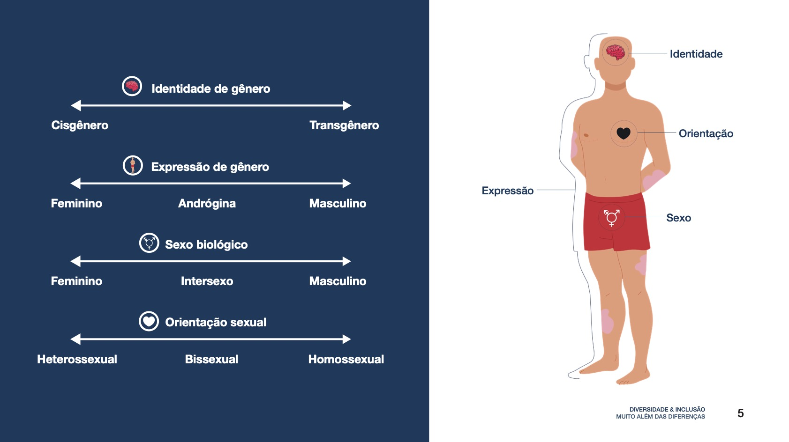

Clareza
Informação organizada em blocos e hierarquias para facilitar leitura, consulta e assimilação.
06 — Subsea7

Contexto
Esta cartilha foi produzida e diagramada como parte das iniciativas de Comunicação Interna da Subsea7, com foco em comunicar de forma clara e inclusiva sobre diversidade sexual e cidadania LGBTQIAP+.
O projeto organiza conceitos, definições e conteúdos educativos em uma linguagem visual acessível, ajudando a transformar informação densa em uma experiência de leitura mais direta e compreensível.
Objetivo
A estrutura editorial precisava apresentar diferentes conceitos relacionados à orientação sexual, identidade e expressão de gênero de forma organizada e visualmente orientada.
Hierarquia tipográfica, distribuição de conteúdo, ilustrações e recursos gráficos foram utilizados para estabelecer caminhos claros de leitura e apoiar a compreensão do material.
Informação organizada em blocos e hierarquias para facilitar leitura, consulta e assimilação.
Recursos visuais ajudam a explicar diferenças conceituais sem depender apenas de grandes volumes de texto.
A linguagem visual acompanha a proposta do conteúdo: comunicar com respeito, proximidade e fácil compreensão.
Design editorial
Na diagramação, cada seção foi construída para distinguir títulos, conceitos, definições e exemplos. O uso de cor funciona como apoio à hierarquia, enquanto ilustrações e elementos gráficos dão contexto visual aos temas abordados.
Mais do que organizar elementos, o trabalho editorial busca transformar conteúdo em compreensão.

Organização visual
O conteúdo combina definições, símbolos, escalas conceituais e ilustrações. Para manter consistência entre formatos tão diferentes, a composição se apoia em uma grade simples, contraste claro e repetição de padrões gráficos.
Essa estrutura permite que cada página tenha personalidade própria sem perder a unidade do material.

Minha atuação
Minha atuação concentrou-se na produção e diagramação do material, estruturando o conteúdo em páginas consistentes e alinhadas à comunicação visual da Subsea7.
O trabalho envolveu organização de informação, hierarquia, composição e integração entre texto e recursos visuais, sempre com foco em clareza e facilidade de leitura.
Confidencialidade
Por se tratar de um material interno, os direitos autorais e de uso pertencem à Subsea7. Por essa razão, o conteúdo completo da cartilha não pode ser divulgado publicamente. As páginas apresentadas aqui funcionam apenas como uma amostra do trabalho de design e diagramação.
Estou aberto a novas oportunidades, projetos e boas conversas.